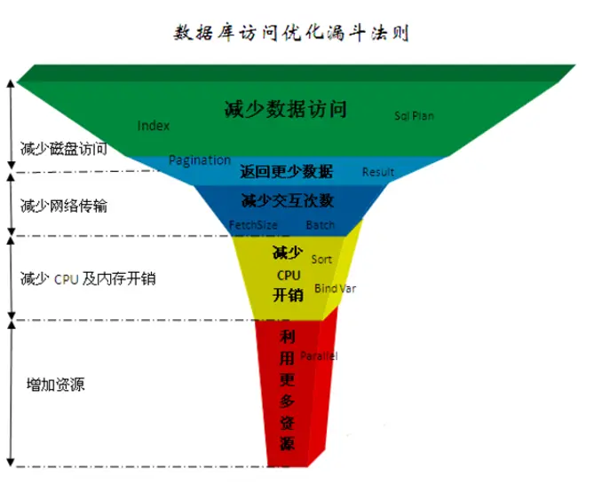

MySQL优化实践¶
一、mysql5.7下载¶
https://cdn.mysql.com/archives/mysql-5.7/mysql-5.7.38-winx64.zip
二、安装及配置¶
- 解压后目录下配置my.ini
[client]
# 设置mysql客户端默认字符集
default-character-set=utf8
[mysqld]
# 设置3306端口
port = 3306
# 设置mysql的安装目录
basedir=D:/software/mysql-5.7.38-winx64
# 设置 mysql数据库的数据的存放目录
datadir=D:/software/mysql-5.7.38-winx64/data
# 允许最大连接数
max_connections=100
# 服务端使用的字符集默认为8比特编码的latin1字符集
character-set-server=utf8
# 创建新表时将使用的默认存储引擎
default-storage-engine=INNODB
# 在Mysql5.7之后，Mysql使用的是严格模式
# sql_mode默认配置为:ONLY_FULL_GROUP_BY, STRICT_TRANS_TABLES, NO_ZERO_IN_DATE, NO_ZERO_DATE, ERROR_FOR_DIVISION_BY_ZERO, NO_AUTO_CREATE_USER, NO_ENGINE_SUBSTITUTION
# 为忽略导入时间戳错误[ERR] 1067 - Invalid default value for ‘update_time‘，添加如下配置
sql_mode=NO_ENGINE_SUBSTITUTION,STRICT_TRANS_TABLES
-
bin目录加入环境变量
-
安装mysqld
mysqld --install
若出现错误：可以 mysqll --remove, 再安装
- 初始化mysql（这里控制台会给出默认密码注意复制使用登录后自行修改）
mysqld --initialize --user=root --console
- 修改密码：
mysqladmin -u root -p rK,od8fwgtCp password 123456
三、mysql登录¶
1. 创建默认字符集utf-8的数据库¶
CREATE DATABASE IF NOT EXISTS saas DEFAULT CHARSET utf8 COLLATE utf8_general_ci;
2.查看数据库列表¶
show databases;
3.常用命令语句¶
use test
desc test
四、MySQL优化实践¶
1.目的¶
为了查询性能的提升，更快速返回查询的数据信息。
2. 数据库访问漏斗法则¶
由最常用至最不常用
1. 减少数据访问
2. 返回更少的数据；
3. 减少交互次数；
4. 减少cpu开销；
5. 资源更多的例用

3.数据库查询常用优化手段¶
3.1 使用合适的字段、字段长度和类型¶
1) 增加一层redis缓存；
2) 禁止使用 SELECT * 查询，避免流量冲击；
3) 不需要认为阅读的字段，建议使用压缩存储，30%大小；
4) 一定要大字段，尽量独立为一张表，提升其他字段更新速度；
5) 适配业务上做优化调整，折成多个字段或通过关联关系；
6) 选择合适的存储数据类型，尽量数值型，字符串是逐个比较。
3.2 SQL执行计划关键指标优化¶
desc select * from tablename
type字段：
system > const > eq_ref > ref > fulltext > ref_or_null > index_merge > unique_subquery > index_subquery > range > index > ALL
优秀值：system、const、eq_ref
糟糕值：index, ALL需要重点关注，index表示全索引扫描，后者表示全表扫描
其他值：range、ref，如果对应的rows很大，那就是非常糟糕
key字段：
表示SQL走的哪个索引，若为空的话，一般就是ALL
rows字段：
根据表统计信息或者索引选用情况，估算找到要查询的记录需要扫描的行数
filtered字段：
表示返回的结果行数占扫描行数的百分比，该值越大越好，满分100
从执行计划指标需要优化情况：
type：index, ALL
key：为空
rows：上万
filtered：小于50
Extra：Using filesort、Using temporary
3.3 索引设计优化¶
1) 用一个索引可以解决的问题，不用多个索引；
2) 减少索引大小，1个索引不用过多的字段；
3) 充分例用索引的有序性，避免filesort
4) 合适的选择性，不需要所有的查询字段都在索引里面
5) 索引提高查询速度，但是降低了插入更新数据的速度
问题：以下问题如何建立索引？
表中假设有100万条记录，常用查询语句如下：
select x frome t where c1=1 and c2=2 and c3=3;
select x frome t where c1=1 and c2=2;
select x frome t where c1=1 and c2=2 and c4=4;
选择建立索引方案有：
联合索引：
1. key `idx_c1_c2_c3` (`c1`,`c2`,`c3`)
2. key `idx_c1_c2_c4` (`c1`,`c2`,`c4`)
3. key `idx_c1_c2` (`c1`,`c2`)
4. key `idx_c1` (`c1`)
5. key `idx_c2` (`c2`)
6. key `idx_c3` (`c3`)
7. key `idx_c4` (`c4`)
8. key `idx_c1_c2_c3_c4` (`c1`,`c2`,`c3`,`c4`) -> 这个最好
索引使用参考结论：
重点：多个单列索引在多条件查询时优化器会选择最优索引策略，可能只用一个索引，也可能全部都用上！但多个单列索引会在底层建立多个B+索引树，会占用更多的空间。也会浪费一定的搜索效率，故如果只有多条件查询时，最好建立联合索引！
联合索引的本质：
当创建联合索引(a, b, c)，相当于创建了(a)、(a, b)、 (a, b, c)三种组合联合索引，经过测试a, c 也可以，但是实际只用到了a的索引，c的并没用到。
顺便提一下：B+树搜索规则
1、从根节点开始。将k与根节点的键进行比较[k1,k2,k3,......k(m-1)]
2、如果k<k1，到根节点的左子节点；
3、如果k==k1，再和ķ2比较.，如果k<k2,k介于ķ1和ķ2之间，在左子节点中搜索ķ2
4、如果k>k2，继续和k3,k4,...k(m-1)比较，重复如第2步和第3步
5、直到节点中存在k，则返回true，否则返回false。
3.4 mysq优化器会自动选择最优索引（会出错么？）¶
最左原则：>mysql会从索引的从第一个键值一直往右匹配，直到遇见（<、>、<>、OR、LIKE[%前缀]）或者索引键没有出现在where条件中，则停止匹配。
索引选择性应用场景：
问题：以下问题如何建立索引？
5000万条记录
count(distinct current_day) = 8
count(distinct kdt_id) = 1115852
其中：current_day >= 20161001 and current_day <= 20170101 记录数：8237217条
kdt_id=104493 记录数：41条
请根据条件建立索引：current_day >= 20161001 and current_day <= 20170101 and kdt_id=104493;
A. idx_cday_kid (current_day, kdt_id)
B. idx_kid_cday (kdt_id, current_day)
正确选择：B --> 因为先查相比很少的记录再匹配多的记录效率会更快，尤其是示例这种数据条数差异很大的情况。